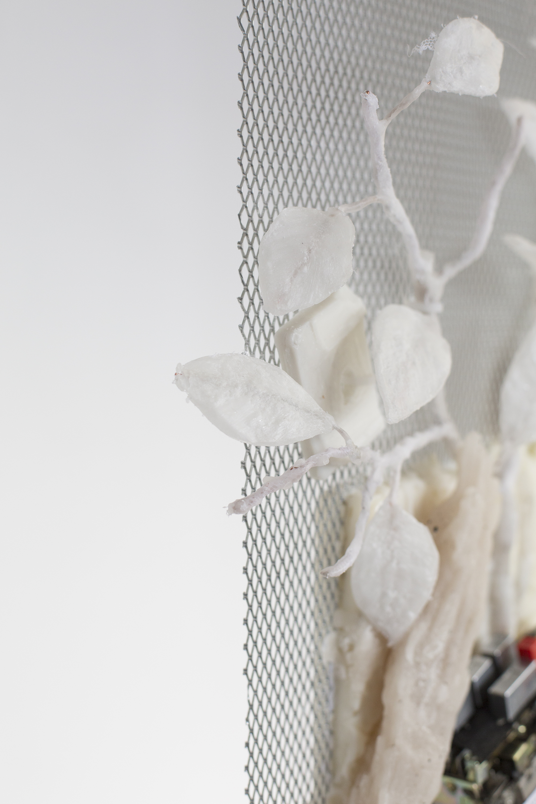
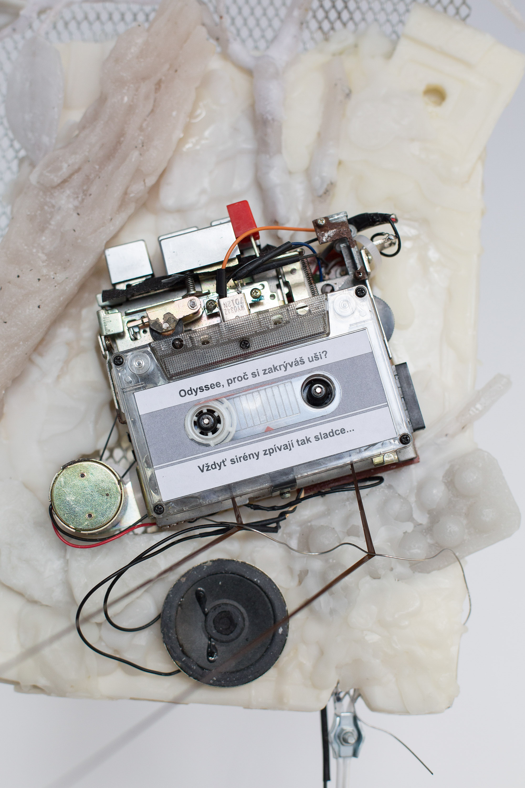
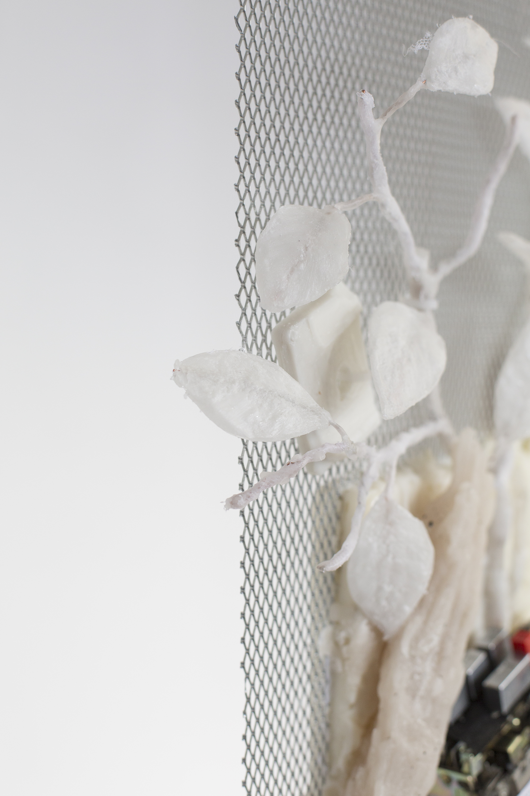
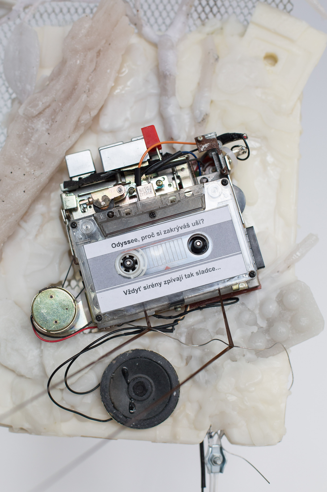

Odysseus, Why Do You Cover Your Ears?, Brno, 2022
sound installation, composition of perfumed wax objects, cassette player, cassette tape, metal grid, clamps, rope, variable dimensions.
The project is about the lost organ of navigation, a condition in which the sense of ground under feet disappears and arises a need for a reference point or vector of movement. The starting point is the myth about Odysseus and the sirens, where the problem is most important. The sirens could attract the attention of a tired traveller and drive him to madness. The secret of the sirens was that they chose as their victims travellers who were melancholic, leaving their homes and families. Taking advantage of the inborn selectivity of the human ear and the ability to listen, to pick out pleasant sounds from the noise, the sirens sang to their victims what they wanted to hear because of melancholy for home, wives and children (the sweet delusion that home would be reached). And as a result, travellers were happy to stop and die. However, we cannot say that the sirens were the main danger in this story, because they only reinforced what was already there in the travellers. In particular, a sense of melancholy, nostalgia and retro-topia. Caught in our own trap, we can become confused and stay in the world of our dreams and happy memories, unaware of the dangers of the reality that lies before it. Of course there is no radical good and evil, black and white, and we are always floundering between shades of grey, but in this artistic experiment I would like to trace a thread between nostalgia and oblivion. The project will include a spatial collage with musical and olfactory elements. These elements were chosen because the sense of smell and the perception of music have the strongest influence on memory and the subconscious.
 


